八経ヶ岳・三峰山
| 日付 | 2021年2月15日（月） - 2021年2月20日（土） | ||||||
|---|---|---|---|---|---|---|---|
| 山域 | 近畿の山 | ||||||
| メンバー | 単独 | ||||||
| 山行形態 | 5泊6日車中、避難小屋泊 | ||||||
| アクセス | 車 | ||||||
| ルート |
|
休暇の後半は一人旅に行くことにする。
子供が産まれてから、一人になるのは初めてだ。
残念ながら季節は冬で、行きたいところはあまりない。
雪の少なそうな九州に行ってみたかったが、
移動時間が長すぎるのと、週の真ん中に寒波が来るので却下。
最後は四国か紀伊半島かで迷ったが、
天候を考えて紀伊半島に行くことに決定する。
1日目
本日は移動日。
明日から大峰山脈の八経ヶ岳に行く予定。
大峯奥駈道を歩くので、本日はその玄関口である吉野の金峯山寺を観光することにする。
高速道路は大雨でかなり運転しづらかったが、雨雲を通り抜けてこの辺りは雨が降っていない。
とは言っても天気はあまり良くなく、平日、遅い時間のため、駐車場はガラガラだ。

吉野の山々。春は桜で有名なところだ。
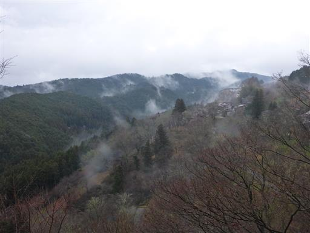
金峯山寺目指して車道をトボトボと歩く。
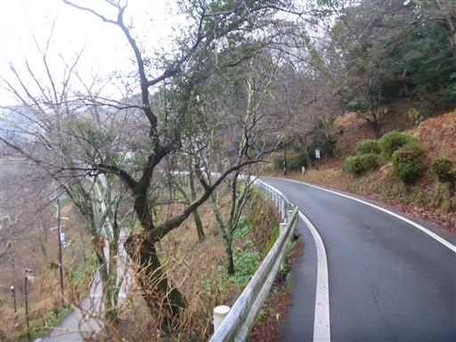
ロープウェイのりばがある。電車の人はロープウェイでここまで上がって来られる。
運行しているのか不明だが、辺りはひっそりとしている。
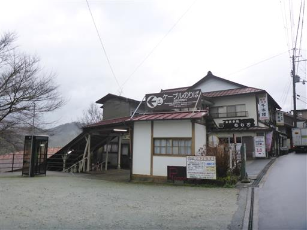
黒門。金峯山寺の総門だ。
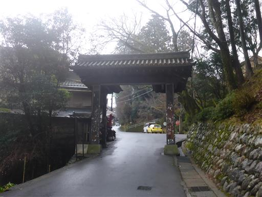
土産物屋が軒を連ねているが、観光客がいないためか、閉まっている店が多い。
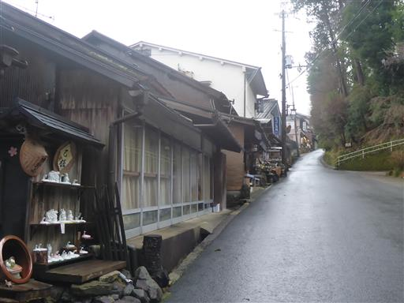
金峯山寺銅鳥居。銅製の現存している鳥居では日本最古で、日本三鳥居の一つらしい。
寺院に鳥居は珍しい。歴史ある鳥居なので、残されたのかもしれない。
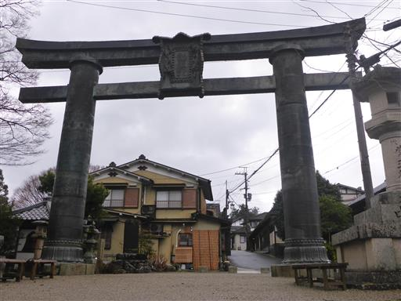
金峯山寺の仁王門は残念ながら修復中で通ることができない。
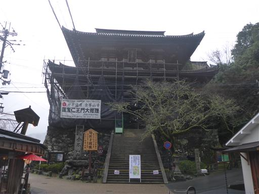
仁王門は通れないので、脇の道から入る。

四本桜。春にはきれいな花を咲かせそうだ。
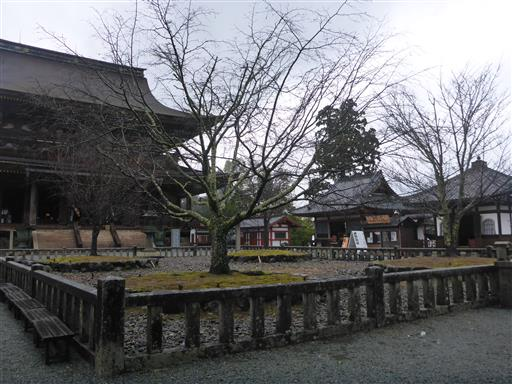
本堂は国宝で非常に大きい。本堂内部のみ有料だ。
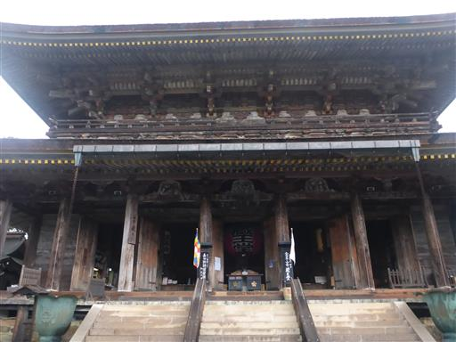
本堂を見学したら金峯山寺を後にする。
周囲は少しずつ花が咲き始めている。
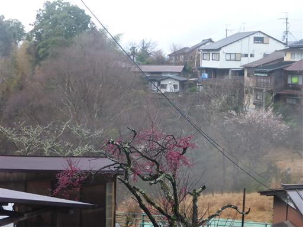
道の駅「吉野路 黒滝」に移動する。本日はここで車中泊予定だ。
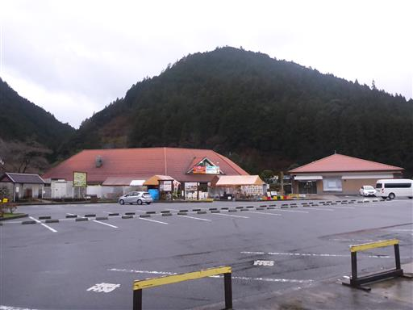
広場と小さな遊具があるが、もう夕方だからかひっそりとしている。
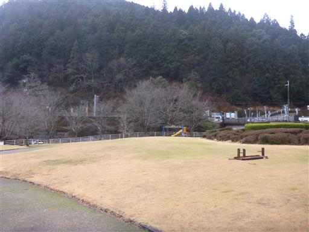